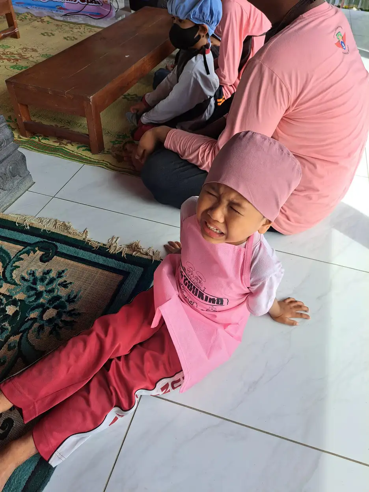
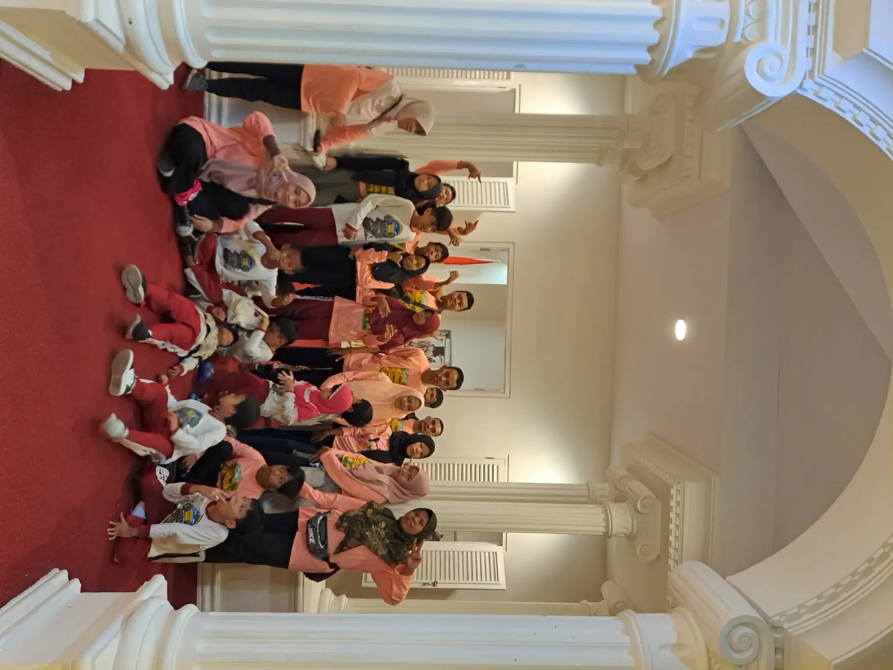
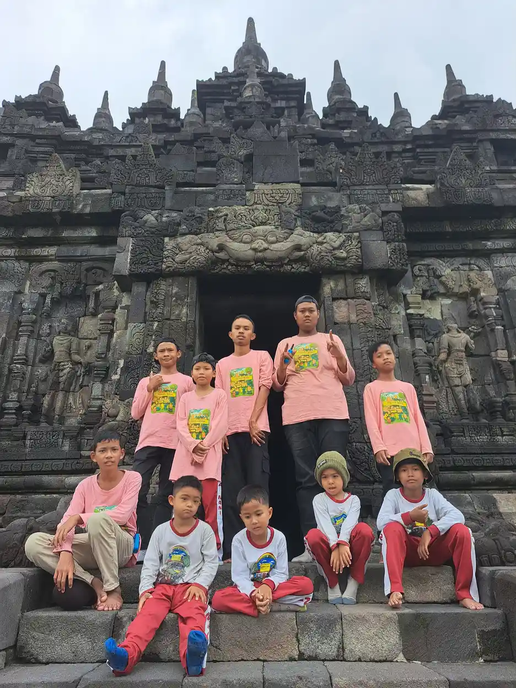
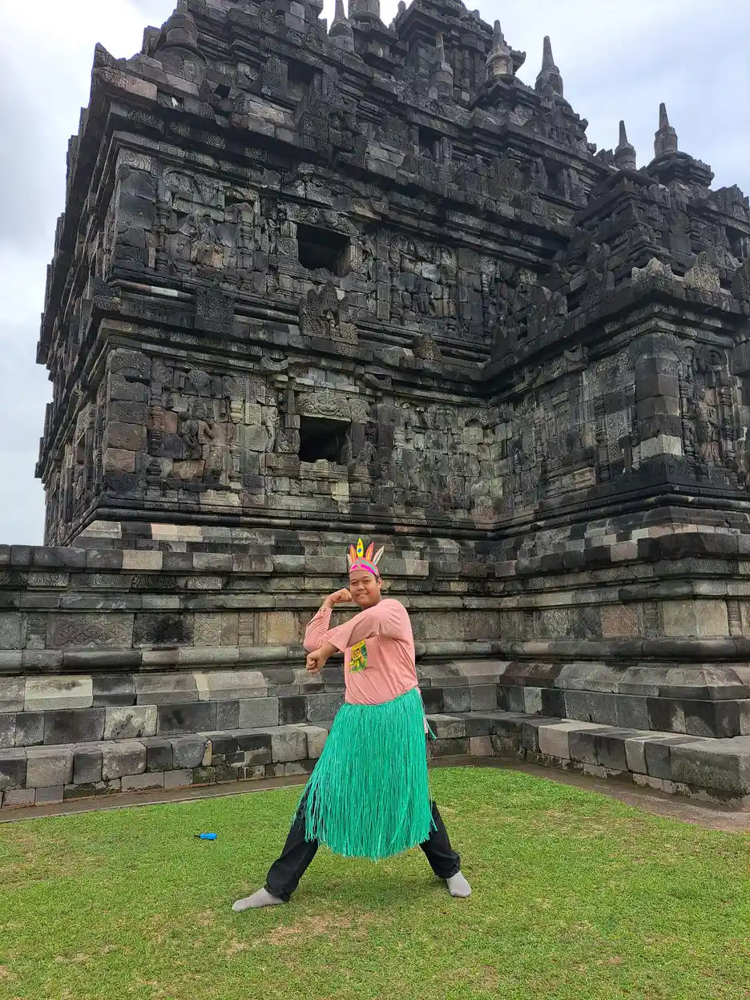

Jawaban singkat: anak tuna rungu bisa mengembangkan kemampuan bicara, tetapi hasilnya tidak sama pada setiap anak dan tidak boleh dijanjikan secara otomatis. Perkembangan komunikasi dipengaruhi oleh jenis serta derajat gangguan pendengaran, usia saat ditemukan, akses terhadap bahasa sejak dini, penggunaan alat bantu bila sesuai, intervensi yang tepat, dan dukungan keluarga. Bahasa lisan bukan satu-satunya ukuran keberhasilan. Bahasa isyarat, tulisan, gestur, dan komunikasi multimodal juga dapat menjadi bahasa yang bermakna bagi anak.
Daftar Isi
- Mengapa jawabannya tidak sama untuk semua anak
- Faktor yang memengaruhi kemampuan bicara
- Akses bahasa sebelum latihan bicara
- Alat bantu dengar dan implan koklea
- Intervensi komunikasi dan terapi
- Peran keluarga di rumah
- Dukungan sekolah inklusi atau SLB
- Tanda perlu evaluasi ulang
- Ringkasan keputusan dukungan
- Pertanyaan yang sering diajukan
Mengapa Jawabannya Tidak Sama untuk Semua Anak
Istilah tuna rungu mencakup rentang kondisi yang luas. Ada anak yang masih dapat mendengar sebagian suara, ada yang memiliki hambatan pendengaran berat, dan ada yang tidak mendengar suara sama sekali. Gangguan dapat muncul sejak lahir, setelah lahir, atau berkembang kemudian. Karena itu, pertanyaan apakah anak tuna rungu bisa bicara tidak bisa dijawab hanya dengan label diagnosis.
Kemampuan bicara juga terdiri dari beberapa bagian. Anak perlu memiliki akses terhadap bahasa, memahami makna kata, membentuk kalimat, mengatur napas dan suara, serta berlatih memakai komunikasi dalam situasi nyata. Seorang anak dapat memiliki suara yang jelas tetapi masih kesulitan memahami percakapan cepat. Anak lain mungkin memakai bahasa isyarat dengan lancar tetapi belum memilih komunikasi lisan. Keduanya tetap memiliki kemampuan komunikasi.
Pandangan yang lebih tepat adalah menanyakan akses komunikasi apa yang paling efektif untuk anak saat ini. Organisasi Kesehatan Dunia menjelaskan bahwa rehabilitasi pendengaran dapat mencakup alat bantu dengar, implan koklea, teknologi pendukung, terapi bahasa, serta bahasa isyarat. Kebutuhan setiap anak perlu dibahas secara individual, bukan dibandingkan dengan target anak lain.
Untuk mengenal istilah dan jenis hambatan pendengaran, baca juga artikel tuna rungu adalah. Jika pertanyaan keluarga berkaitan dengan peluang pemulihan, artikel apakah tuna rungu bisa sembuh membahasnya secara terpisah tanpa memberikan janji hasil.

Faktor yang Memengaruhi Kemampuan Bicara Anak Tuna Rungu
Faktor pertama adalah jenis dan derajat gangguan pendengaran. Gangguan konduktif, sensorineural, dan campuran memiliki mekanisme yang berbeda. Sebagian gangguan konduktif dapat ditangani secara medis, sedangkan gangguan sensorineural dapat memerlukan strategi rehabilitasi dan dukungan komunikasi yang berbeda. Hanya pemeriksaan audiologi dan evaluasi tenaga kesehatan yang dapat menjelaskan kondisi anak secara memadai.
Faktor kedua adalah usia saat gangguan ditemukan dan usia saat anak mendapat akses terhadap bahasa. Bayi belajar memahami pola komunikasi jauh sebelum mengucapkan kata. Bila akses terhadap bahasa tertunda, anak mungkin membutuhkan waktu lebih panjang untuk mengejar pemahaman dan kosakata. Menemukan gangguan lebih awal memberi keluarga kesempatan lebih cepat untuk memilih alat bantu, bahasa, dan intervensi yang sesuai.
Faktor ketiga adalah konsistensi akses. Alat bantu yang rusak, baterai habis, ruang terlalu bising, wajah pembicara tidak terlihat, atau guru berbicara sambil membelakangi anak dapat mengurangi informasi yang diterima. Masalah ini bukan semata kemampuan anak. Lingkungan juga perlu dibuat lebih mudah diakses.
Faktor keempat adalah dukungan komunikasi yang tepat. Anak dapat memakai bahasa lisan, bahasa isyarat, tulisan, membaca ujaran, gestur, atau kombinasi beberapa cara. Akses bahasa tidak seharusnya ditunda hanya karena keluarga berharap anak kelak berbicara. Anak membutuhkan bahasa yang dapat ia gunakan sekarang untuk memahami, meminta bantuan, bermain, dan menyampaikan perasaan.
Faktor kelima adalah kesehatan dan perkembangan lain yang menyertai. Kondisi penglihatan, motorik, atensi, perkembangan kognitif, kesehatan mulut, dan pengalaman emosional dapat memengaruhi komunikasi. Karena itu, evaluasi yang baik tidak hanya mendengar suara anak, tetapi juga melihat fungsi komunikasinya dalam kehidupan sehari-hari. Bila ada kondisi penyerta seperti down syndrome, sampaikan seluruh riwayat kepada tim pemeriksa.

Akses Bahasa Lebih Dulu, Latihan Bicara Mengikuti
Bahasa dan bicara tidak identik. Bahasa adalah sistem untuk memahami dan menyampaikan makna, sedangkan bicara adalah salah satu cara menghasilkan bahasa melalui suara. Anak tuna rungu tetap membutuhkan bahasa yang dapat diakses, walaupun cara penyampaiannya tidak selalu melalui suara.
Bila keluarga memilih bahasa isyarat, orang tua dan saudara perlu belajar menggunakannya secara konsisten. Bila anak menggunakan alat bantu dan mengembangkan bahasa lisan, keluarga tetap dapat memakai gestur, tulisan, gambar, atau isyarat pendukung ketika situasi bising atau anak lelah. Komunikasi multimodal membuat anak tidak kehilangan pesan hanya karena satu saluran sedang sulit digunakan.
Bahasa isyarat bukan sekadar kumpulan gerakan tangan. Bahasa isyarat memiliki aturan, kosakata, dan komunitas penutur. Di Indonesia, keluarga dapat menemukan pembahasan tentang BISINDO dan SIBI melalui artikel bahasa isyarat tuna rungu. Pilihan sistem sebaiknya dibicarakan bersama komunitas Tuli, guru, dan tenaga profesional agar keluarga tidak hanya mempelajari tanda secara terpisah. Bila anak juga menjalani terapi wicara, targetnya perlu diselaraskan dengan akses bahasa yang digunakan di rumah.
Di rumah, berikan komentar bahasa selama kegiatan sehari-hari. Saat menyiapkan makanan, tunjukkan benda dan tindakan. Saat membaca buku, tunjuk gambar, gunakan isyarat atau kata, lalu tunggu respons. Saat anak menunjuk sesuatu, tanggapi maksudnya dan kembangkan menjadi pesan yang sedikit lebih lengkap. Pola berulang ini membantu anak memahami bahwa komunikasi punya tujuan nyata.
Jangan menilai perkembangan hanya dari jumlah kata yang bisa diucapkan. Catat apakah anak dapat meminta, menolak, memilih, menjawab, menceritakan pengalaman, memahami aturan, dan mencari bantuan. Fungsi komunikasi tersebut lebih dekat dengan kebutuhan hidup sehari-hari dibanding kemampuan mengulang daftar kata.
Alat Bantu Dengar dan Implan Koklea
Alat bantu dengar memperkuat suara yang masuk ke telinga, tetapi tidak mengembalikan pendengaran normal. Manfaatnya bergantung pada jenis gangguan, sisa pendengaran, kecocokan perangkat, pengaturan, kondisi telinga, dan cara anak memakainya. Anak juga perlu lingkungan yang mendukung, bukan hanya perangkat di telinga.
Implan koklea bekerja dengan cara berbeda dan hanya dipertimbangkan pada kondisi tertentu setelah evaluasi yang lengkap. Keputusan tidak boleh dibuat berdasarkan testimoni singkat atau janji bahwa anak pasti akan bicara. Tim yang menangani biasanya perlu menilai pendengaran, kesehatan, perkembangan, kesiapan keluarga, ekspektasi, dan rencana rehabilitasi setelah tindakan.
| Hal yang dinilai | Pertanyaan untuk tenaga profesional |
|---|---|
| Kondisi pendengaran | Jenis, derajat, dan pola gangguan anak seperti apa, serta apakah berubah dari waktu ke waktu? |
| Akses suara | Seberapa besar manfaat alat bantu untuk mendengar percakapan dan suara lingkungan? |
| Akses bahasa | Bahasa apa yang dapat dipakai anak sekarang agar tidak menunggu terlalu lama untuk berkomunikasi? |
| Rencana dukungan | Siapa yang memantau perangkat, latihan, perkembangan bahasa, dan penyesuaian sekolah? |
| Ekspektasi | Hasil apa yang realistis dalam beberapa bulan, dan tanda apa yang menunjukkan rencana perlu diubah? |
Keluarga sebaiknya menyimpan hasil audiogram, catatan pemeriksaan, jadwal kontrol, dan informasi perangkat. Data tersebut membantu guru serta terapis memahami kebutuhan anak. Bila perangkat tidak nyaman atau anak sering melepasnya, cari penyebabnya bersama profesional. Jangan memaksa atau mengubah pengaturan sendiri.
Intervensi Komunikasi dan Terapi
Intervensi komunikasi adalah rangkaian dukungan agar anak dapat memahami dan menyampaikan pesan dengan lebih efektif. Bentuknya dapat mencakup terapi wicara dan bahasa, latihan mendengar, pembelajaran bahasa isyarat, bimbingan keluarga, dukungan pendidikan, dan penyesuaian teknologi. Tidak semua anak membutuhkan kombinasi yang sama.
Terapi wicara dapat membantu produksi suara, artikulasi, pemahaman bahasa, atau penggunaan komunikasi dalam percakapan. Terapis perlu mengetahui hasil pemeriksaan pendengaran dan cara komunikasi yang dipilih keluarga. Target terapi harus konkret, misalnya mampu meminta bantuan saat bermain, bukan sekadar mengejar pengucapan suara tertentu.
Latihan mendengar, bila direkomendasikan, perlu dilakukan dalam tahapan yang sesuai. Anak mungkin belajar menyadari ada suara, membedakan suara, menghubungkan suara dengan makna, lalu memakai informasi itu dalam percakapan. Proses tersebut memerlukan pengulangan dan waktu. Hasil yang lambat tidak otomatis berarti anak gagal.
Bahasa isyarat dan komunikasi visual dapat berjalan bersama dukungan bicara. Penelitian dan pedoman profesional yang dirujuk ASHA menekankan pentingnya keputusan yang berpusat pada keluarga dan akses bahasa yang konsisten. Orang tua berhak mendapat penjelasan yang seimbang mengenai pilihan, manfaat, keterbatasan, dan kebutuhan dukungan jangka panjang.
Buat rencana sederhana bersama tim pendukung. Tentukan sasaran tiga bulan, cara mengukurnya, orang yang bertanggung jawab, serta kapan hasil ditinjau. Misalnya, anak dapat mengikuti instruksi dua langkah memakai kombinasi isyarat dan gambar dalam empat dari lima kesempatan. Sasaran yang terukur lebih membantu daripada kalimat umum seperti anak harus cepat bicara. Proses pemetaan kebutuhan dapat dimulai melalui asesmen anak berkebutuhan khusus yang melibatkan keluarga dan sekolah.

Peran Keluarga dalam Mengembangkan Komunikasi
Keluarga adalah lingkungan komunikasi yang paling sering ditemui anak. Beberapa kebiasaan kecil dapat membuat pesan lebih mudah diterima. Panggil perhatian anak sebelum berbicara atau berisyarat, hadap wajahnya, pastikan cahaya cukup, kurangi suara latar, dan beri waktu untuk menyelesaikan respons. Jangan langsung menyelesaikan kalimat anak.
- Gunakan rutinitas. Ulangi kata, isyarat, atau gambar yang sama ketika kegiatan yang sama dilakukan sehingga anak memahami hubungan antara pesan dan pengalaman.
- Berikan pilihan. Tawarkan dua benda atau aktivitas, lalu tunggu anak menunjuk, memberi isyarat, menulis, atau mengucapkan pilihan.
- Perluas pesan. Bila anak menunjuk bola, orang tua dapat menambahkan pesan bola merah atau mau bermain bola tanpa memaksa anak menirukan.
- Baca buku bersama. Gunakan gambar, ekspresi, tulisan, dan isyarat. Tanyakan siapa, apa, di mana, dan mengapa sesuai kemampuan anak.
- Catat kemajuan. Simpan contoh komunikasi baru dan situasi ketika anak lebih mudah memahami pesan.
- Jaga interaksi tetap menyenangkan. Permainan, memasak, berjalan, dan merapikan barang dapat menjadi latihan komunikasi yang lebih bermakna daripada sesi panjang yang melelahkan.
Hindari membandingkan anak dengan saudara atau anak lain. Perbandingan dapat membuat keluarga mengejar suara tertentu sambil mengabaikan kebutuhan anak untuk dipahami. Ukur kemajuan dari titik awal anak sendiri dan dari seberapa baik ia dapat berpartisipasi di rumah, sekolah, dan lingkungan sosial. Panduan dukungan keluarga anak ABK dapat membantu keluarga membuat rutinitas dukungan yang konsisten.
Bila keluarga berbeda pendapat tentang metode komunikasi, kembali ke pertanyaan utama: apakah anak mendapat akses bahasa yang jelas, aman, dan konsisten? Diskusikan bukti dan pengalaman bersama audiolog, terapis, guru, serta komunitas Tuli. Keputusan dapat dievaluasi dan disesuaikan seiring perkembangan anak.
Dukungan Sekolah Inklusi atau SLB
Anak tuna rungu dapat belajar di SLB maupun sekolah reguler penyelenggara pendidikan inklusif. Pilihan sekolah tidak boleh diputuskan dari label saja. Perhatikan akses komunikasi, kesiapan guru, ukuran kelas, akomodasi, teman sebaya, jarak, dan kemampuan sekolah bekerja sama dengan keluarga.
Di kelas, guru dapat mengurangi hambatan dengan berdiri menghadap anak, memakai materi visual, menulis instruksi penting, mengatur pencahayaan, mengurangi kebisingan, dan memastikan anak dapat melihat siapa yang sedang berbicara. Bila dibutuhkan, sekolah dapat merencanakan juru bahasa isyarat, juru catat, atau pendamping sesuai asesmen dan peraturan yang berlaku.
Orang tua perlu meminta pertemuan rutin untuk membahas tujuan komunikasi dan akademik. Sampaikan cara anak memahami pesan di rumah, alat bantu yang digunakan, tanda anak lelah mendengar, serta strategi yang efektif. Sekolah juga perlu memberi umpan balik yang konkret, bukan hanya menyebut anak kurang fokus.
Untuk mengenal pilihan pendidikan lebih lanjut, baca SLB tuna rungu, pendidikan inklusi, dan cara berkomunikasi dengan anak tuna rungu. Pendidikan yang baik membuka partisipasi anak, bukan memaksa semua anak mengikuti satu cara komunikasi.

Tanda Anak Memerlukan Evaluasi Ulang
Rencana dukungan perlu ditinjau ulang bila anak tiba-tiba tidak merespons suara seperti biasanya, sering melepas alat bantu, tampak kesakitan, mengalami infeksi telinga, berhenti memakai kata atau isyarat yang sebelumnya dikuasai, atau kesulitan mengikuti percakapan di lingkungan yang sebelumnya mudah. Perubahan itu tidak selalu berarti pendengaran memburuk, tetapi perlu diperiksa.
Bawa catatan situasi yang memicu kekhawatiran. Tulis kapan perubahan terlihat, apakah terjadi di rumah dan sekolah, apakah perangkat berfungsi, serta apakah ada sakit atau demam. Informasi ini membantu audiolog atau dokter mengarahkan pemeriksaan. Jangan menunda hanya karena anak masih dapat berbicara beberapa kata.
Segera cari pertolongan medis bila anak mengalami nyeri telinga berat, keluar cairan berdarah, demam tinggi, cedera kepala, atau perubahan pendengaran yang mendadak. Artikel edukasi tidak dapat menggantikan pemeriksaan langsung. Bila anak memakai implan atau alat bantu khusus, ikuti jalur layanan yang diberikan oleh timnya.
Keluarga juga perlu memperhatikan kesehatan emosional. Anak yang berulang kali tidak memahami percakapan dapat merasa tersisih, marah, atau menarik diri. Beri tahu guru dan anggota keluarga lain cara mengikutsertakan anak dalam percakapan. Memastikan anak paham adalah tanggung jawab lingkungan, bukan hanya tuntutan kepada anak.
Ringkasan Langkah untuk Keluarga
Pertanyaan apakah anak tuna rungu bisa bicara sebaiknya diubah menjadi rencana dukungan yang dapat dilakukan. Pastikan anak memiliki akses bahasa sejak dini, lakukan pemeriksaan yang diperlukan, pilih alat bantu atau intervensi berdasarkan evaluasi, dan sediakan lingkungan komunikasi yang dapat diakses. Pantau kemampuan memahami serta menyampaikan pesan, bukan hanya kejernihan suara.
| Langkah | Tujuan | Bukti kemajuan yang dapat dicatat |
|---|---|---|
| Evaluasi pendengaran | Memahami jenis dan derajat gangguan | Hasil pemeriksaan, rekomendasi, dan jadwal kontrol tersimpan |
| Pilih akses bahasa | Memberi anak cara memahami dan menyampaikan pesan sekarang | Anak dapat meminta, menolak, memilih, dan mencari bantuan |
| Atur dukungan | Menghubungkan keluarga, profesional, dan sekolah | Ada sasaran tertulis serta pembagian peran yang jelas |
| Latih dalam rutinitas | Membawa komunikasi ke situasi nyata | Anak menggunakan pesan dalam bermain, makan, belajar, dan bersosialisasi |
| Tinjau berkala | Menyesuaikan rencana dengan perkembangan anak | Target diperbarui berdasarkan data, bukan perbandingan |
Tidak ada satu jalur yang wajib untuk semua anak. Sebagian anak mengembangkan bicara, sebagian lebih kuat memakai bahasa isyarat, dan sebagian menggunakan keduanya. Yang paling penting adalah anak tidak menunggu tanpa bahasa, keluarga mendapat informasi yang seimbang, dan lingkungan memberi kesempatan anak untuk didengar serta dipahami.
Pertanyaan yang Sering Diajukan tentang Anak Tuna Rungu Bisa Bicara
Apakah anak tuna rungu pasti tidak bisa bicara?
Tidak. Kemampuan bicara setiap anak berbeda. Faktor yang berpengaruh antara lain derajat dan jenis gangguan pendengaran, usia saat gangguan ditemukan, akses anak terhadap bahasa, alat bantu yang sesuai, serta dukungan keluarga dan tenaga profesional. Sebagian anak mengembangkan komunikasi lisan, sebagian memakai bahasa isyarat, dan sebagian menggunakan beberapa cara sekaligus.
Apakah alat bantu dengar membuat anak langsung bisa bicara?
Tidak langsung. Alat bantu dengar dapat membantu suara terdengar bila memang sesuai dengan jenis gangguan dan diprogram dengan tepat, tetapi anak tetap membutuhkan akses bahasa, latihan komunikasi, lingkungan yang responsif, dan pemantauan berkala. Alat bantu bukan jaminan otomatis bahwa ucapan anak akan berkembang seperti anak yang mendengar.
Apakah implan koklea wajib untuk anak tuna rungu?
Tidak. Implan koklea adalah salah satu pilihan untuk kondisi tertentu dan harus dibahas melalui evaluasi tim medis. Tidak semua anak memerlukannya atau cocok dengannya. Keluarga perlu mendapat penjelasan mengenai manfaat, keterbatasan, proses rehabilitasi, risiko, biaya, dan pilihan komunikasi lain sebelum mengambil keputusan.
Apakah bahasa isyarat menghambat anak belajar bicara?
Tidak ada dasar untuk menganggap bahasa isyarat sebagai penghambat otomatis. Bahasa isyarat memberi anak akses bahasa yang dapat dipahami dan digunakan sejak dini. Pilihan komunikasi dapat berupa bahasa isyarat, bahasa lisan, tulisan, atau kombinasi, sesuai kebutuhan anak dan hasil diskusi bersama keluarga serta profesional.
Kapan anak tuna rungu perlu diperiksa pendengarannya?
Sesegera mungkin bila ada kekhawatiran, riwayat faktor risiko, atau anak tidak mencapai respons suara dan perkembangan komunikasi yang diharapkan. Sasaran deteksi dan intervensi pendengaran dini yang banyak dipakai adalah skrining sebelum usia 1 bulan, pemeriksaan diagnostik sebelum 3 bulan bila tidak lolos, dan intervensi sebelum 6 bulan. Anak yang lebih besar tetap perlu diperiksa bila muncul perubahan.
Bagaimana orang tua membantu anak mengembangkan komunikasi di rumah?
Gunakan cara komunikasi yang dapat diakses anak, hadap anak saat berbicara atau berisyarat, pastikan pencahayaan cukup, beri waktu untuk merespons, dan ulangi pesan dengan kalimat sederhana. Jadikan kegiatan makan, mandi, bermain, dan membaca sebagai kesempatan berbahasa tanpa memaksa anak mengulang suara terus-menerus.
Apakah anak tuna rungu bisa sekolah di sekolah inklusi?
Bisa, bila sekolah mampu menyediakan akses dan akomodasi yang sesuai. Dukungan dapat berupa tempat duduk yang membantu melihat guru, materi tertulis atau visual, guru pendamping khusus, juru bahasa isyarat atau juru catat bila dibutuhkan, serta komunikasi rutin dengan keluarga. SLB juga merupakan pilihan yang sah dan perlu dibandingkan berdasarkan kebutuhan anak.
Bacaan Terkait
Sumber dan Referensi
- WHO, Deafness and hearing loss
- NIDCD, Your Baby's Hearing and Communicative Development Checklist
- ASHA, Children with Hearing Loss
Catatan: Artikel ini bersifat edukasi umum dan bukan pengganti konsultasi dengan psikolog, tenaga kesehatan, atau petugas layanan sosial resmi. Sumber resmi diperiksa pada 11 November 2026. Artikel ini tidak memberikan diagnosis, pilihan alat, atau rekomendasi terapi individual.
Tentang artikel ini
- Ditulis oleh: Tim YUKA (Yayasan Ukhuwah Kaffah Amanatullah), pengelola Sekolah Inklusi Taruna Imani, Sleman, Yogyakarta.
- Dasar rujukan: WHO, NIDCD, dan ASHA. Tautan sumber spesifik tersedia di bagian referensi.
- Terbit: 12 November 2026. Pembaruan terakhir: 12 November 2026.
- Status tinjauan medis: artikel ini adalah informasi edukasi umum dan belum ditinjau oleh dokter berlisensi. Untuk diagnosis, alat bantu, implan, atau terapi, konsultasikan dengan tenaga kesehatan dan audiolog.
- Kebijakan koreksi: bila menemukan klaim yang kurang tepat, beri tahu kami melalui halaman kontak.